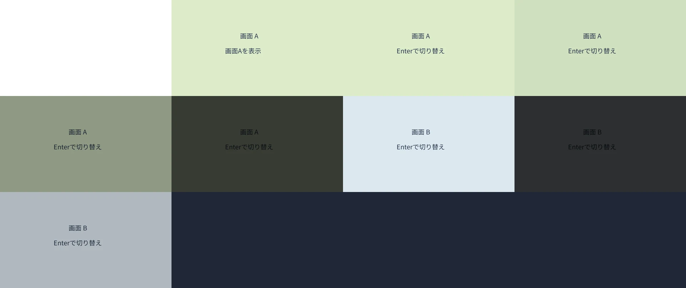
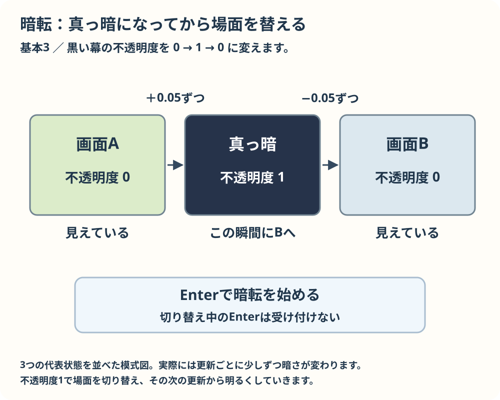

画面の暗転を作る
始める前に
ZIPを展開してできたフォルダーでindex.htmlを開きます。ZIPにはひな型の3ファイルが入っています。
WindowsでZIPを展開する（動画）
変更前を探し、変更後に置き換えて保存し、index.html を開き直します。
ステップ 1：画面を表示する
このステップの見本を図で見る
scene === "A" → #dcecca
まず画面全体に色を付ける。
"画面 " + "A" = "画面 A"
背景の上に画面名が現れる。
ゲーム画面とコードの前後を見る

このステップの見本
この行を足す前 変わったコードの一例（script.js）
ctx.fillStyle = scene === "A" ? "#dcecca" : "#dce8ef"; ctx.fillRect(0, 0, 800, 450);
見本で確かめること
画面Aが表示されます。
目標
画面を表示する。
小さな作業
上から順に作業します。目印を探し、その下のコードを書きます。
画面と暗転の状態を覚える
作業用の script.js の先頭近くで、次の目印のすぐ下に追加します。
目印
const ctx = canvas.getContext("2d");追加するコード
let scene, phase, alpha;let は後で値を変えられる変数を作ります。scene は画面、phase は暗転の段階、alpha は黒の不透明さです。
画面Aから始める
start() から update() の閉じ波括弧までで、次の範囲を置き換えます。
置き換える範囲
function start() {
}
function update() {
}置き換えるコード
function start() {
scene = "A"; phase = "idle"; alpha = 0;
}
function update() {
}= は右の値を左へ入れる代入です。画面 A、切り替え待ちの idle、透明な黒 0 から始めます。
画面に応じた背景を描く
draw() の画面を消す行の下で、次の目印のすぐ下に追加します。
目印
ctx.clearRect(0, 0, canvas.width, canvas.height);追加するコード
ctx.fillStyle = scene === "A" ? "#dcecca" : "#dce8ef"; ctx.fillRect(0, 0, 800, 450);=== は同じかの比較、条件 ? A : B は条件に応じて A または B を選ぶ書き方です。画面 A なら緑、そうでなければ青の背景を描きます。
画面名を表示する
背景を描く行の下で、次の目印のすぐ下に追加します。
目印
ctx.fillStyle = scene === "A" ? "#dcecca" : "#dce8ef"; ctx.fillRect(0, 0, 800, 450);追加するコード
ctx.fillStyle = "#26334a"; ctx.font = "30px sans-serif";
ctx.fillText("画面 " + scene, 320, 180);色と文字の大きさを決め、+ で「画面」と名前をつなぎます。
今の画面を案内する
画面名の行から gameLoop() の先頭行までで、次の範囲を置き換えます。
置き換える範囲
ctx.fillText("画面 " + scene, 320, 180);
}
function gameLoop() {置き換えるコード
ctx.fillText("画面 " + scene, 320, 180);
ctx.fillText("画面Aを表示", 250, 250);
}
function gameLoop() {最初は画面 A の案内を表示します。切り替えは次のステップで作ります。
保存して作業用の index.html を再読み込みし、画面 A が表示されることを確かめます。切り替えは次に作ります。
保存後の確認
保存してゲーム画面を更新する（動画）
index.html を再読み込みします。画面Aが表示されます。 この段階の見本を開く
小さな練習
背景の色を変えます。 練習後はコードを元に戻してください。
ステップ 2：暗くして切り替える
このステップの見本を図で見る
このステップの見本
この行を足す前 変わったコードの一例（script.js）
if (phase === "out") {
見本で確かめること
Enterで暗くなり、画面Bへ変わります。
目標
暗くして切り替える。
小さな作業
上から順に作業します。目印を探し、その下のコードを書きます。
切り替え操作を案内する
draw() の画面Aの案内で、次の範囲を置き換えます。
置き換える範囲
ctx.fillText("画面Aを表示", 250, 250);置き換えるコード
ctx.fillText("Enterで切り替え", 250, 250);Enter で切り替える案内を表示します。
黒い幕を描く
操作案内の下で、次の目印のすぐ下に追加します。
目印
ctx.fillText("Enterで切り替え", 250, 250);追加するコード
ctx.globalAlpha = alpha; ctx.fillStyle = "#000000"; ctx.fillRect(0, 0, 800, 450); ctx.globalAlpha = 1;globalAlpha は描くものの不透明さで、0 は透明、1 は不透明です。画面全体に黒を描いた後、次の描画へ影響しないよう 1 に戻します。
暗くする処理を用意する
update() の中で、次の範囲を置き換えます。
置き換える範囲
function update() {
}置き換えるコード
function update() {
if (phase === "out") {
alpha = Math.min(1, alpha + 0.05);
}
}if は条件が成り立つときに実行します。暗くする out の間は不透明さを 0.05 増やし、Math.min で 1 を超えないようにします。
暗くなったら画面を切り替える
不透明さを増やす行の下で、次の目印のすぐ下に追加します。
目印
alpha = Math.min(1, alpha + 0.05);追加するコード
if (alpha >= 1) { scene = scene === "A" ? "B" : "A"; phase = "idle"; alpha = 0; }>= は以上です。黒が 1 になったら画面 A と B を切り替え、待機に戻して黒を透明にします。この段階では切り替え後にすぐ明るくなります。
キー入力を受け取る
draw() の閉じ波括弧から gameLoop() の先頭行までで、次の範囲を置き換えます。
置き換える範囲
}
function gameLoop() {置き換えるコード
}
window.addEventListener("keydown", event => {
if (event.repeat) return;
if (event.key.toLowerCase() === "r") { start(); return; }
});
function gameLoop() {keydown はキーを押したときに起きます。繰り返しを除き、小文字にしたキーが R なら最初に戻します。
Enterで暗転を始める
R の判定の下で、次の目印のすぐ下に追加します。
目印
if (event.key.toLowerCase() === "r") { start(); return; }追加するコード
if (event.key === "Enter" && phase === "idle") phase = "out";&& は両方の条件が必要という意味です。Enter を押し、待機中なら暗くする段階にします。切り替え中の重複入力は受け付けません。
保存して再読み込みし、Enter で画面が暗くなってから B に切り替わることを確かめます。この段階では切り替え後にすぐ明るくなります。
保存後の確認
Enterで暗くなり、画面Bへ変わります。 この段階の見本を開く
小さな練習
0.05を0.1に変えて比べます。 練習後はコードを元に戻してください。
ステップ 3：切り替え後に明るくする
このステップの見本を図で見る
このステップの見本
if (alpha >= 1) { scene = scene === "A" ? "B" : "A"; phase = "idle"; alpha = 0; }
変わったコードの一例（script.js）if (alpha >= 1) { scene = scene === "A" ? "B" : "A"; phase = "in"; }
見本で確かめること
Enterで暗転し、Bになってから明るくなります。
目標
切り替え後に明るくする。
小さな作業
上から順に作業します。目印を探し、その下のコードを書きます。
切り替え後に明るくする段階へ進む
update() の画面切り替えで、次の範囲を置き換えます。
置き換える範囲
if (alpha >= 1) { scene = scene === "A" ? "B" : "A"; phase = "idle"; alpha = 0; }置き換えるコード
if (alpha >= 1) { scene = scene === "A" ? "B" : "A"; phase = "in"; }黒が 1 になったら画面を切り替え、黒のまま明るくする in の段階へ進みます。
徐々に明るくする
out の分岐の閉じ波括弧で、次の範囲を置き換えます。
置き換える範囲
if (alpha >= 1) { scene = scene === "A" ? "B" : "A"; phase = "in"; }
}置き換えるコード
if (alpha >= 1) { scene = scene === "A" ? "B" : "A"; phase = "in"; }
} else if (phase === "in") {
alpha = Math.max(0, alpha - 0.05);
if (alpha <= 0) phase = "idle";
}in の間は黒の不透明さを 0.05 減らします。Math.max で 0 未満を防ぎ、<= 0、つまり 0 以下になったら待機に戻します。

Enterで画面に黒い幕をかけます。真っ暗になった瞬間に次の画面へ切り替え、幕を少しずつ透明にします。切り替え中にEnterを連打しても、途中からやり直しません。
3状態の模式図。alphaを更新ごと±0.05、1でscene変更、次のupdateから減少。
保存して再読み込みし、Enter で暗くなり、画面が切り替わってから徐々に明るくなることを確かめます。
保存後の確認
Enterで暗転し、Bになってから明るくなります。 この段階の見本を開く
小さな練習
暗転の速度を変えます。 練習後はコードを元に戻してください。
自分のゲームに組み込むには
scene、phase、alphaと暗転中の入力制御を自作ゲームへ移します。
真っ暗になった位置でsceneを変更し、各画面の描画を自分のdrawGameやメニュー描画に替えます。
この欄のstartGame・updateGame・drawGameは、自分のゲーム側の開始・更新・描画の関数名の例です。自分の関数名に合わせて読み替えます。gameLoopは増やさず、既存のstart・update・drawから必要な処理を呼び、再挑戦では持ち込んだ状態や入力も初期化します。